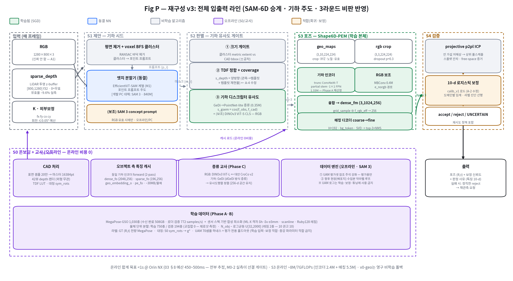

RTX PRO 6000 Blackwell 96GB ×1 · MegaPose-GSO 508GB 수신 완료(1,030종)
확정 전제 · 로더 검증 772 samples/s
폴백
v0-geo (무학습 전체 사슬) — 4.9mm / 0.71° 합성 통과
README · 영구 유지
2v0 — 출발 제안의 명문화
v0 (제안 원문 요지) — 입력은 CAD + 이미지 + 깊이로 SAM-6D와 동일하되 기하 정보 메인으로 추정:
① SAM 3(Segment Anything 3)로 세그먼트 후보 생성 →
② 타깃 CAD와 기하적 특징 유사도가 확인되는 물체 선별 →
③ 임계 이상 물체에 DINOv3 기반 자세 추정 네트워크 적용.
이 제안의 골격은 현 설계(S1 제안 → S2 판별 → S3 포즈)와 동형이다. 즉 v0는 새 파이프라인이 아니라 기존 5단 구조의 구성요소 교체 제안으로 읽는 것이 정확하며, 그렇게 읽어야 어느 교체가 타당한지 요소별로 판정할 수 있다. 다만 v0에는 명문화 시점에 이미 드러나는 내부 긴장 1건이 있다:
v0의 내부 긴장. 첫 문장은 "기하 정보 메인"인데, ③의 자세 네트워크를 DINOv3(RGB 웹이미지 17억 장으로 학습된 시각 foundation)로 두면 추정의 주도권이 다시 RGB로 넘어간다. 재도장·오염에 강해야 한다는 A1 전제와 정면 충돌한다. 이 긴장의 해소가 R1의 첫 과제다.
3비판 R1 — 배포·예산이 먼저 자른다
R1-1SAM 3 온라인 탑재는 성립하지 않는다 — 840M, H200에서 30ms
SAM 3(2025-11 공개)는 ~840M 파라미터(Perception Encoder 비전 450M + 텍스트 300M + 검출·추적 100M)이고, 공식 수치가 H200 GPU에서 이미지당 ~30ms다. 16GB급 VRAM을 요구하는 서버급 모델이다.
Orin NX는 FoundationPose(수백 M급)조차 엔진 빌드가 OOM인 플랫폼이다(10 §6.6). 온라인 S1에 SAM 3을 놓는 선택지는 계산이 끝나기 전에 기각된다.
또한 SAM 3의 신기능인 concept prompt(텍스트·예시 기반)는 의미론적 = 외형 계열 신호다. 재도장에 대한 강건성은 국소 특징보다 오히려 나을 수 있으나(개념 수준이므로), RGB가 죽으면 함께 죽는다 — A1 체계에서 주 시드가 될 수 없고 보조만 가능하다.
R1-2DINOv3를 자세 네트워크 백본으로 — 세 가지 측정이 모두 기각한다
① 예산: DINOv3 최소 모델 ViT-S/16이 224 입력에서 4.64 GMACs — S3 전체 예산 3.5 GMACs를 단독 초과, 인스턴스 3배치면 4배(12 §1 계산·13 §2 실측 검증).
② 격자: ViT-S/16 출력은 14×14 — 설계가 요구하는 geo56(56×56, 1024점 grid_sample)보다 16배 성겨서 점별 대응의 변별이 사라진다(12 §4-①).
③ 실측: 절단 ConvNeXt(DINOv3 증류판) 초기화조차, 예산에 맞춰 stage1·2만 가져오면 ImageNet 대비 이득이 확인되지 않았다(13 §4.2c — 단일 CAD 한계는 있으나 긍정 증거가 없다). 그리고 무엇보다 기하 주도 전제와 자기모순이다(§2).
R1 반영 — v1 결정 3건
① 엣지 S1 = EfficientViT-SAM 계열(동결, 포인트 프롬프트) — 설계 M1 그대로. SAM 3의 정식 자리는 오프라인이다: (i) 개발 PC 평가 앵커(상한 품질 확인) (ii) 데이터 엔진(SAM 2의 model-in-the-loop 방법론, 16 §6) — 단 대상이 제한된다: UAM 평가셋의 참조 주석 강화(평가용)와 향후 현장(배포지) 수집분의 약라벨 루프. UAM 로그를 학습·보정에 넣는 용도가 아니다(§5.5 정책). (iii) 장기적으로 엣지 분할기의 증류 교사 후보. ② DINOv3의 자리는 두 곳으로 분리 — S2 판별의 의미 점수(ViT-S/16 CLS, 동결·온라인 — 해상도 불필요라 격자 감점 없음, 03 §5의 "semantic은 ViT-S로 축소" 방침과 정합) + Phase C 증류 교사(ViT-L, 오프라인). S3 백본은 아니다. ③ S3 인코더는 소형 기하 인코더 유지(후보 재선정은 Phase A) — DINOv3와의 관계는 "백본"이 아니라 "교사"다.
4비판 R2 — 제로샷 정식화가 다음을 자른다
R2-1어떤 인코더를 골라도, 매칭부가 없으면 제로샷은 불성립 — 이번 세션의 핵심 실측
15 §4: 동일 인코더·동일 과제에서 물체를 1종→750종으로 늘리고 미학습 194종으로 검증하자 top-1 0.993 → 0.147, ICP 수렴반경(≤30°) 진입률 98.8% → 5.8~7.3%. 인코더 3종(스크래치/ImageNet/DINOv3)이 전부 같았다 — 인코더의 문제가 아니라 정식화의 문제다.
원리: 미학습 물체의 정준 좌표계는 관측만으로 알 수 없다. SOTA 전부(SAM-6D·MegaPose·FoundationPose·Co-op·FreeZe)가 "관측 ↔ CAD 템플릿" 두 입력의 비교기를 학습하는 이유가 이것이다(16 §3).
따라서 자세 본체는 SAM-6D의 2단 점 매칭 구조를 승계하는 것이 유일하게 정당한 선택이며, v0의 "개선할 부분만 개선" 원칙과도 맞는다 — 03 §6.0의 개조 6건(특징 주도권 역전 · 오브젝트 측 전량 캐시 · 커스텀 CUDA 제거 · 용량 축소 · top-3+NMS · TRT 비호환 분리)이 그 개선 목록이다.
R2-2대칭 모호성은 백본 선택으로 풀리지 않는다
14 Fig 3: 최악 실패는 전부 180° 뷰 혼동이고, 혼동쌍의 렌더가 육안으로 동일했다. UAM 실기 평가의 실패 34%도 같은 유형(07). 이는 입력에 정보가 없는 경우라 어떤 인코더/백본도 원리적으로 못 푼다(10 §6.2).
해소 수단은 네트워크 밖에 있다: 학습단 — 대칭군 g* 단일선택 손실(모순 그라디언트 제거, SOTA 대부분이 없는 우리 우위 — 10 §8-①). 추론단 — top-3 가설을 S4로 넘겨 free-space 물리 증거로 판별(FreeZe SAR의 무학습 치환 — 11 §4.3) + 직립 프라이어.
R2-3CAD(조밀 렌더) ↔ 장면(희소 LiDAR)의 밀도 10배 비대칭
학습형 기하 매칭은 밀도 불일치에서 붕괴한 전례가 명확하다(GeoTransformer RR 97.9→0.0%, Predator 89→2.1% — 10 §6.7). 설계의 대응(가중치 공유 + domain_flag + CAD 측 2.5D 부분 관측 + partial conv)은 문헌 방향과 일치하나 미검증이다.
→ Phase A·B의 판정 항목에 밀도 스윕을 1급으로 넣는다(10 권고 2). 밀도 스윕 하네스는 파일럿에서 확보됐다(단 §5.5에 따라 학습 희소화는 합성 패턴으로 — 실기 마스크는 평가 쪽 검증에만).
R2 반영 — v2 결정 4건
① 자세 본체 = SAM-6D 승계 2단 점 매칭(coarse 2블록 → fine 2블록, H=192, bg_token, top-3+NMS) — "DINOv3 기반 네트워크" 문구를 이것으로 대체.
② 오브젝트 측 특징은 S0 캐시 필수 — 비용 절감이 아니라 제로샷의 필요조건(15 §4의 역설적 확증).
③ 대칭은 g* 손실(학습) + top-3 → S4 free-space(추론)의 2중 처리.
④ 인코더 선정은 대응 정식화 파일럿(Phase A)에서 재실행 — 13·14의 순위는 분류 정식화라 무효.
5비판 R3 — 학습·데이터·검증 체계
#
지적
내용 → v3 반영
R3-1
파일럿 방법론 함정 2건 (자체 실증)
8에폭 축소 파일럿이 순위를 정반대로 냈고(ConvNeXt layer_scale 1e-6), 사전학습 가중치는 고LR에서 붕괴(lr 1e-3 장기 스케줄에서 MAE 90.7°). → 수렴 확인 의무 + 후보별 lr 정책(사전학습 3e-4 / 스크래치 1e-3)을 학습 규약으로 명문화 (13 §4.1·§6.2)
R3-2
UAM 실기에는 GT가 없다
로그된 SAM-6D 포즈는 GT가 아니고, 검증기 라벨이 "거리 프록시"를 배웠을 위험이 진단 대기(10 §7 C-1). → 포즈 학습 라벨은 MegaPose GT만. UAM은 전면 평가 전용(§5.5 정책) — 보정셋도 UAM이 아니라 자체 희소 합성 + sparsified-BOP로 적합(05 간과점 #4의 3단 중 1·2단). 09의 UAM-적합 calib_v1 계열은 진단 실험으로만 유효하며 프로덕션 보정기로 승격 불가. 검증기 재보정 전 라벨 진단 선행 (10 권고 1)
R3-3
라이선스 3건
DINOv3(연구 동의 완료·상업 약관 미검토), ShapeNet(D4 보류 — 현재 디스크에 GSO만), SAM 3(라이선스 확인 필요). → 기본 경로는 전부 비의존으로 설계: 학습 GSO-only + 다양성 비용을 UAM 셋에서 측정(10 권고 6·7), S2 의미 점수 폴백 = DINOv2-S(Apache-2.0), 데이터 엔진은 내부 도구라 리스크 낮음(확인은 필요)
R3-4
인프라 위생 미결 4건
config 미주입(A-1: free_viol_max 0.05/0.15 발산), E2E 골든 테스트 부재(A-3), TDF 단방향 점수(A-4), 보정 계수를 런타임이 로드하지 않음(A-2). → 전부 Phase 0으로 승격 — 학습 시작 전 필수 (10 권고 4·5·11)
R3-5
게이트가 2년 전 기준
"BOP AR ≥ 68"은 dense depth·구식 기준선(10 §6.3·§6.5). → 게이트를 Δ(v0-geo 대비) + UAM 실기 성공률 + ICP 수렴반경(≤30°) 진입률 + 밀도 스윕 곡선 + Orin 실측 지연으로 재정의. BOP·UAM 충돌 시 UAM 우선을 지금 확정(제안 — 합의 필요)
R3-6
SOTA 재현은 불가능하고 목표도 아니다
MegaPose 32×V100, Co-op 8×A100 6.5일 vs 우리 1 GPU(16 §5). → M2의 정체성은 "정확도 경쟁"이 아니라 증류·경량화(10 §9) — Phase C가 그 실행이다
R3-7§5.5 UAM 로그 사용 원칙 — 평가 전용 (이번 라운드에서 교정된 자기 오염 3건)
UAM 전시장 로그는 테스트 셋이다. 학습·적합 경로에 넣는 순간 그 위에서 잰 모든 평가가 무효가 된다. 본 문서 v1.0 초안과 선행 파일럿에는 이 원칙을 어긴 지점이 3건 있었고, 전부 교정한다:
① 학습 희소화에 실기 마스크 156종 사용(14 §2.1, 17 초안 Phase B) — 테스트 도메인 입력의 직접 유출. → 센서 스펙 기반 합성 희소화로 대체: ML-X(80) 격자(δh·δv 파라미터화·σ3mm) + scanline + Ruby128 레짐. 실기 통계(유효율 9.6% 등)는 합성기의 사후 검증에만 사용(설계 입력 아님).
② SAM 3 데이터 엔진으로 S2 임계·S4 보정셋 갱신(17 초안) — 테스트 셋 위 적합. → 엔진의 대상을 평가 주석 강화 + 향후 현장 수집분으로 한정.
③ 09의 calib_v1(UAM 적합) — 부호 반전 진단 실험으로는 유효하나, 프로덕션 보정기로는 사용 불가. 보정은 합성+sparsified-BOP로 적합하고 UAM은 홀드아웃 평가만. 허용: 평가·리포트, 참조 주석 강화(평가용), 합성 증강의 통계적 사후 검증. 금지: 학습 입력(마스크·crop·이미지), 보정기·임계 적합, 증강 파라미터의 직접 적합. 센서 특성화는 UAM이 아니라 D2-a 실측(실기종)이 정본 경로다.
6최종 명세 v3 — 전체 입출력 라인

Fig P. 재구성 v3 전체 라인. 색 = 학습됨(초록) / 동결 NN(파랑) / 비학습 알고리즘(회색) / 오프라인(보라) / 회귀·보정 적합(주황). SAM 3은 하단 오프라인 영역(데이터 엔진)에만 정식 배치된다. PEM 내부 상세는 15 Fig A 참조.
6.1 스테이지별 입출력 계약
단계
입력
출력
핵심 연산
실패 시
S0 오프라인
CAD 메시 (스케일 확정)
마스터 16384pt · 42뷰 depth 템플릿 · TDF LUT · sym_rots · 인코더 특징 캐시(dense_fo 2048×256 등, ~30MB/물체)
표면 샘플 → splat 렌더 → 2-pass 캐시(인코더 확정 후 특징 추가 굽기)
온보딩 거부 (대칭 검출 승인 게이트)
S1
sparse_depth [800,1280] f32 + RGB
마스크 후보 {m_i} + 클러스터 {c_i}
평면 제거 → voxel BFS → 포인트 프롬프트 → EfficientViT-SAM(동결)
Phase 0 (1주) → A (2주) → B (4~5주) → C (2~3주). 병렬 트랙: 데이터 엔진은 Phase A부터 가동하되 평가 주석·향후 현장분 한정(§5.5). 어느 게이트가 실패해도 v0-geo가 배포 가능한 폴백으로 상존 — 프로젝트가 0이 되는 경로는 없다.
10리스크 · 결정 대기 · 검토 이력
#
리스크 / 결정
유형
내용
D-1
ShapeNet/Objaverse 확보
결정 대기
08 §3.2의 "나란히 측정"은 데이터가 있어야 성립. 낙폭 판정은 UAM 셋 포함 (10 권고 6·7)
D-2
DINOv3·SAM 3 상업 약관
결정 대기
연구 사용은 확보. 배포·데이터 엔진 산출물의 파생 조건 검토 — D4와 묶어 처리
D-3
BOP vs UAM 게이트 우선순위
합의 필요
본 문서 제안: UAM 우선 (BPC 2025에서 지표 1위≠파지 1위 실증 — 10 §6.5)
D-4
CroCo 교사 채택 여부
Phase C 판정
Co-op의 선택이 근거. ablation으로 결정 — 사전 확정하지 않음
R-1
매칭부 최초 구현 리스크
기술
현재 nn.Module 0개 — Phase A의 최소 매칭부가 첫 구현. SAM-6D 코드가 참조 구현으로 존재하는 것이 완충
R-2
밀도 비대칭 붕괴
기술
문헌상 최대 리스크(10 §6.7). Phase A 밀도 스윕이 조기 경보 — 붕괴 시 후보 (b)/(c)로 전환
R-3
1s 예산 미달
배포
M0-2 실측(Phase 0)이 조기 판정. 미달 시 계층화 ICP·해상도 축소의 순으로 삭감 (05 #1)
검토 이력 — v0 → v3에서 바뀐 것
구성요소
v0출발 제안
v3확정
바꾼 근거
S1 분할
SAM 3 온라인
EfficientViT-SAM(엣지) + SAM 3은 오프라인 데이터 엔진·PC 앵커
R1-1: 840M·H200 30ms — 서버급
S2 선별
기하 유사도 (방법 미정)
크기 + TDF+coverage + GeDi증류 디스크립터 + (보조) ViT-S CLS, 보정 임계
A-4 실측 · dGeDi 선례 · TRT 제약(PTv3 제외)
S3 자세
"DINOv3 기반 네트워크"
SAM-6D 승계 2단 점 매칭(개조 6건) + 소형 기하 인코더. DINOv3는 교사·S2 판별로 재배치
R1-2(예산·격자·전제 모순) + R2-1(비교기 실증)
대칭
—
g* 손실 + top-3 → S4 free-space
R2-2: 백본으로 못 푸는 문제
학습
—
Phase 0/A/B/C · 대응 정식화 · 수렴/lr 규약 · Δ(v0-geo)+UAM+≤30° 게이트
R3 전체 + 15 §6
UAM 로그 역할
(초안) 데이터 엔진으로 보정셋 갱신 + 학습 희소화 마스크
전면 평가 전용 — 학습·보정·튜닝 금지, 합성 희소화·합성 보정셋으로 대체
R3-7 (사용자 지적 반영)
한 문장. v0의 세 구성요소는 전부 살아남았다 — 단 제자리로 옮겨서: SAM 3은 온라인이 아니라 데이터 엔진으로, DINOv3는 자세 백본이 아니라 판별과 교사로, 기하 유사도는 구호가 아니라 coverage+증류 디스크립터의 측정 가능한 게이트로. 자세 본체는 SAM-6D의 매칭 구조를 승계한다 — 그것이 제로샷의 필요조건임을 이번 세션이 실측으로 보였기 때문이다.